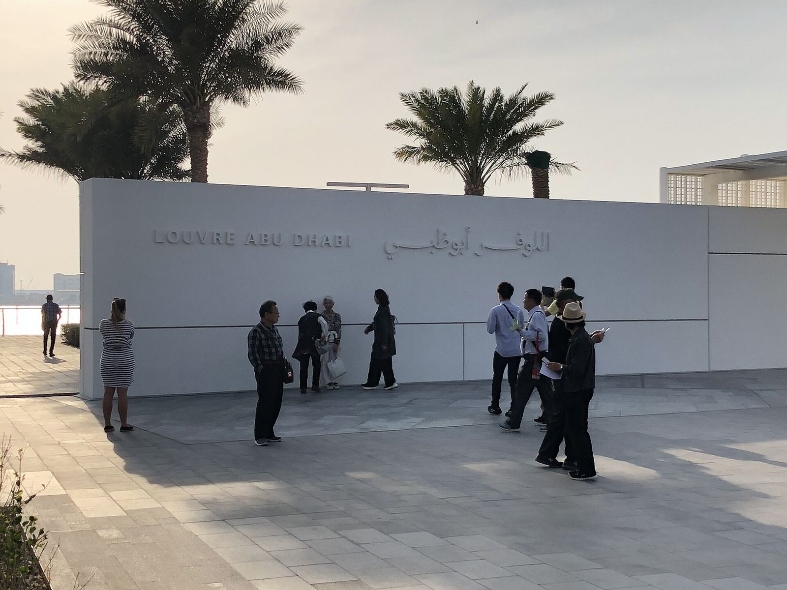

أبوظبي
«توابل وعجائب» في اللوفر أبوظبي: طرق المحيط الهندي


معرض الخريف الكبير في اللوفر أبوظبي اسمه بالإنجليزية Spices and Wonders: Sailing the Indian Ocean. التغطية المنشورة في 11 أكتوبر 2026 بتحدد العرض من 14 أكتوبر 2026 إلى 14 فبراير 2027، وبالشراكة مع متحف غيميه في باريس. ذا ناشونال رجّع المعرض في دليل 23 أكتوبر ضمن موسم الخريف في الإمارات.
الموضوع المعلن
المعرض، حسب الدليلين، بيمشي على طرق البحر اللي وصلت أفريقيا والشرق الأوسط وأوروبا بجنوب آسيا وجنوب شرقها، من العصور القديمة لحد القرن السابع عشر. التوابل والنسيج والخزف وغيرها من البضائع هي الخيط، مش لوحة واحدة. القيّمان المذكوران عند Artmena هما د. غيلهم أندريه من اللوفر أبوظبي ود. كلير ديليري من غيميه. نفس المصدر قال إن المعرض هيسافر لباريس السنة الجاية.
ده تاريخ تجارة وثقافة مادية. القطعة هنا شاهد على طريق، مش أيقونة منفصلة. عشان كده ملخص «معرض عن التوابل» ناقص لو ما قالش إن المدى الجغرافي من المحيط، وإن الشريك متحف غيميه، وإن الموعد ممتد لحد فبراير.
الصورة
الصورة المرافقة للمقال لافتة المدخل من ملف مفتوح على كومنز، ومش قبة المتحف ومش صورة تركيب المعرض. لقطات القاعات في التغطيات الصحفية ليها أصحاب حقوق، ومنستخدمهاش هنا.
المصادر
تواريخ المعارض ممكن تتغير. راجع صفحة الجهة قبل الزيارة.